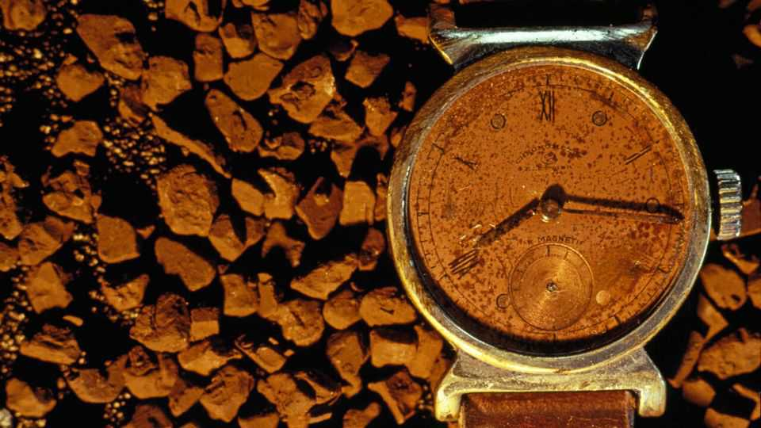
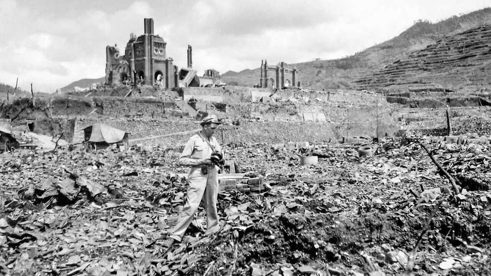

A long-lost memoir brings the horrors of atomic warfare to life
Tanimoto Kiyoshi, one of the subjects of John Hersey’s “Hiroshima”, tells his story

Aug 6th 2026
WHEN THE atomic bomb hit Hiroshima at 8.15am on August 6th 1945, Tanimoto Kiyoshi was helping a neighbour move furniture on the outskirts of the city. He hid between two rocks and, miraculously, emerged unharmed. Then Tanimoto, a Methodist minister, began a harrowing journey to search for his wife, daughter and church members. He encountered ghostly processions of naked people, their skin hanging from their flesh. “People were moving as if they were carrying precious porcelain with both hands,” he wrote in a memoir that has been newly rediscovered.
Some ten months later, with the city still in ruins, a lanky American journalist visited Tanimoto’s home. He said he wanted to investigate the effects of the atomic bombs “from the perspective of the people”. Tanimoto told the man his story; the journalist “listened intently and showed much sympathy”. That August, the New Yorker dedicated an entire issue of its magazine to John Hersey’s “Hiroshima”.
The article, later republished as a book, became a sensation. The American public was forced to confront the horrific human toll of the atomic bombings. “Hiroshima” also made Tanimoto and the other five main characters famous (though it took a couple of months for news of the publication to make it back to Hiroshima). Tanimoto later co-translated the book into Japanese and did a speaking tour across America. He campaigned for peace and disarmament until his death in 1986.
Now, more than 80 years after the bombing, Tanimoto’s voice rings out again. He wrote his account in English, which he had mastered while studying in a seminary in Atlanta before the war. A copy was discovered in Hersey’s archives during research for a forthcoming film produced by Cannon Hersey, an artist and the author’s grandson, and Nishimae Taku, a Japanese film-maker. The memoir offers a significant contribution to the historical record.

It is also a valuable complement to Hersey’s work. Whereas Hersey employs the narrative rhythms of a practised storyteller in “Hiroshima”, Tanimoto’s “Hiroshima, 8:15” flows with the relentless intensity of eyewitness testimony. He notes a skeleton hanging from a streetcar, “the white ashes of Akiko and Makoto” in the ruins of their house, and a baby clinging to the unburnt nipples of an otherwise blackened mother as she slowly dies. He recalls how a badly burnt body was identified “by the colour and design of the slacks and the ribbon on the clogs”. He poignantly describes brief moments of levity. Priests discover pumpkins that have been roasted in the blast and joke that they are “better than chestnuts”.
Faith keeps Tanimoto going. He sees the destruction unleashed on Japan as a kind of divine punishment for its wartime sins. He resolves to help Christianity spread in the country in the aftermath. He retains the hope of a true believer, ever attuned to signs of light in the darkness. After discovering aubergines growing in the ruins, he brings one to a parishioner whose eyeballs had to be removed. “Look, this eggplant has sprouted from the ashes and has borne a fine fruit,” Tanimoto tells her. “I hope you can overcome the atomic bomb as this plant has done.”
The memoir’s discovery and publication is timely. The hibakusha (survivors of Hiroshima and Nagasaki) are dying out: just over 90,000 remain alive, most of whom were young children during the war. As living memory fades, the dream of disarmament slips further out of reach. The arms-control architecture of the cold war has collapsed. Great powers are updating their nuclear arsenals as they gear up for a new era of competition and conflict; more and more countries are pondering acquiring nuclear weapons of their own.
Hersey understood this dynamic all too well. As he told an interviewer 40 years after his landmark article, “I think that what has kept the world safe from the bomb since 1945 has not been deterrence, in the sense of fear of specific weapons, so much as it’s been memory. The memory of what happened at Hiroshima.” ■